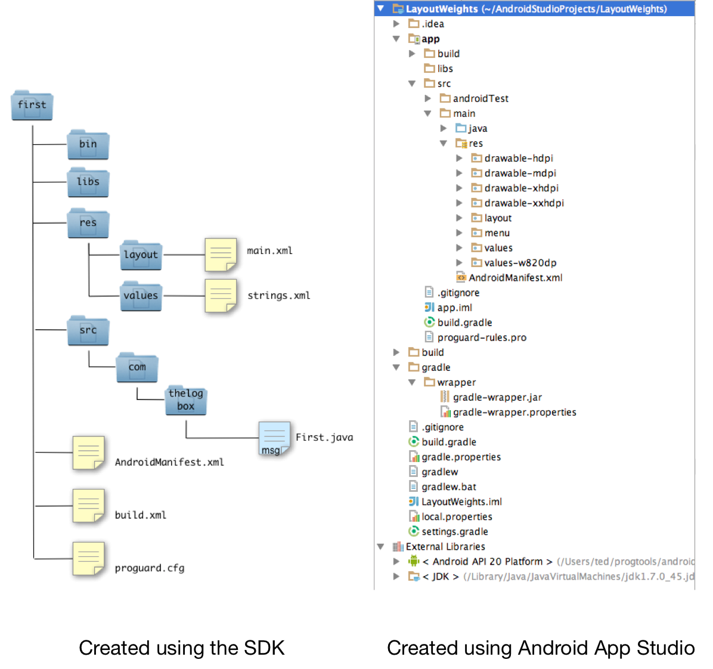

Android Project
An Android project is required to build a single app. A project is a simple folder that contains a collection of XML, Java source, images, property and optional audio or video files. It has a very specific structure that stays the same for all android projects. With the exception of images, audio and video files which may be used by your project, everything inside this project are plain text files. This is the reason why some programmers can develop android applications using just plain editors.
The commands and utilities inside the Android SDK expects this structure and is optimized to work with it. If you deviate from this structure, you will have grief. It is not wise to build this project structure unaided by tools. At the very least, you should use the android create project utility included in the SDK.
Popular IDEs like Eclipse, NetBeans and Android Studio have wizard driven ways of creating an android project. But no matter what you use to create such a project, the structure of the files and folders is pretty uniform.

The one on the left is a project created using just the SDK. The picture on the right was created using the Android App Studio, a full blown IDE for Android development. While the Android Studio project appears to have more files, the basic structure of the two projects remains very consistent.
- src
- a folder that contains the Java source files. All your program logic will be written on these files. If you want to do something when a user clicks a Button, starts you application or suspends an application, you will write them on the source files. And these source files will be stored here
- res
- a folder that contains other folders like "res", "values" and some images. The folder names that says "drawable" contains images that your application may use
- bin
- When you compile the project, this is where the binary or executable files will be stored
- libs
- Sometimes you will need to use codes that other developers built. These third party libraries should be located on this folder
- layout
- Android favors the declarative way of defining user interfaces. The screens you will create can be built using XML files. This is the folder where XML screen files are stored
- values
- Hard coding string values is a dangerous practice. The idiomatic way of defining strings for labels, buttons etc is to store them in resource bundles. These resource bundles are nothing more than XML files. You will store the resource bundles in this folder
- AndroidManifest.xml
- Every project needs one manifest file. This file is important. It declares the things that are inside your application like how many screens it have, what their names are. It also affects the things your application can do. It declares whether your application can use the network, the local storage or the camera for example
- local.properties
- This file contains build configuration information e.g. the location of the Android SDK in your system